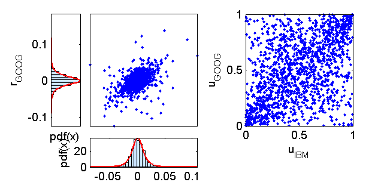
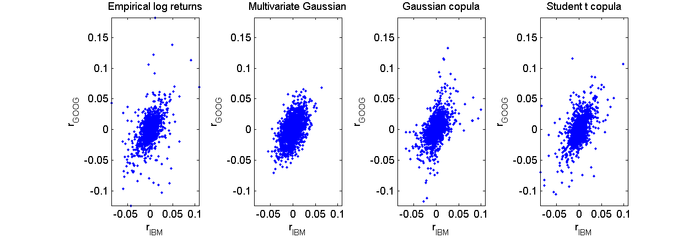

Contents
function demo_multivariateModels
demo_multivariateModels: Models for the joint distribution of log returns
Load the data
S = load('closingPrices_IBM_GOOG_SI_2007_07_01_2013_06_30.txt');
Time series of daily closing prices
S_IBM = S(:,1);
S_GOOG = S(:,2);
Time series of daily returns
r_IBM = log(S_IBM(2:end)./S_IBM(1:end-1));
r_GOOG = log(S_GOOG(2:end)./S_GOOG(1:end-1));
Student's t fit for the marginals of the log returns
Degrees of freedom: seed for the optimization
nu0 = 5;
Student's t fit for IBM
[mu_IBM,sigma_IBM,nu_IBM,modelPdf_IBM,modelCdf_IBM,modelInv_IBM] = ...
fit2StudentT(r_IBM,nu0);
nu_IBM
Local minimum found that satisfies the constraints.
Optimization completed because the objective function is non-decreasing in
feasible directions, to within the default value of the function tolerance,
and constraints are satisfied to within the default value of the constraint tolerance.
nu_IBM =
3.1326
Student's t fit for GOOG
[mu_GOOG,sigma_GOOG,nu_GOOG,modelPdf_GOOG,modelCdf_GOOG,modelInv_GOOG] = ...
fit2StudentT(r_GOOG,nu0);
nu_GOOG
Local minimum found that satisfies the constraints.
Optimization completed because the objective function is non-decreasing in
feasible directions, to within the default value of the function tolerance,
and constraints are satisfied to within the default value of the constraint tolerance.
nu_GOOG =
2.7552
Transform to U[0,1] marginals
u_IBM = modelCdf_IBM(r_IBM);
u_GOOG = modelCdf_GOOG(r_GOOG);
Plot the joint distribution
figure(10);
subplot(4,8,[2:4 10:12 18:20]);
h = plot(r_IBM,r_GOOG,'.');
axis_IBM_GOOG = [min(r_IBM) max(r_IBM) min(r_GOOG) max(r_GOOG)];
axis(axis_IBM_GOOG);
set(gca,'YTick',[]);
set(gca,'XTick',[]);
nBins = 40;
subplot(4,8,26:28);
graphicalComparisonPdf(r_IBM,modelPdf_IBM)
xlabel('r_{IBM}')
h = legend(''); set(h,'Visible','off');
subplot(4,8,[1 9 17])
graphicalComparisonPdf(r_GOOG,modelPdf_GOOG)
xlabel('r_{GOOG}')
set(gca,'YTick',[]);
h = legend(''); set(h,'Visible','off');
view([90 -90])
subplot(4,8,4 + ([2:4 10:12 18:20]));
plot(u_IBM,u_GOOG,'.');
xlabel('u_{IBM}')
ylabel('u_{GOOG}')
axis([0 1 0 1])

Models for the joint distribution of empirical returns
M = length(r_IBM);
Multivariate Gaussian model
mu = [mean(r_IBM); mean(r_GOOG)];
Sigma = cov([r_IBM r_GOOG]);
Z = multivariateGaussianRand(M,mu,Sigma);
simulated_r_IBM_Gaussian = Z(:,1);
simulated_r_GOOG_Gaussian = Z(:,2);
Student's t marginals + Gaussian copula
rho = corr([norminv(u_IBM) norminv(u_GOOG)]);
U = gaussianCopulaRand(M,rho);
simulated_r_IBM_GaussianCopula = modelInv_IBM(U(:,1));
simulated_r_GOOG_GaussianCopula = modelInv_GOOG(U(:,2));
Student's t marginals + Student's t copula
rho = [1 0.55; 0.55 1];
nu = 2.4;
U = studentTCopulaRand(M,rho,nu);
simulated_r_IBM_studentTCopula = modelInv_IBM(U(:,1));
simulated_r_GOOG_studentTCopula = modelInv_GOOG(U(:,2));
Plot the results
figure(1);
subplot(1,4,1);
plot(r_IBM,r_GOOG,'.');
axis(axis_IBM_GOOG);
xlabel('r_{IBM}');
ylabel('r_{GOOG}');
title('Empirical log returns')
subplot(1,4,2);
plot(simulated_r_IBM_Gaussian,simulated_r_GOOG_Gaussian,'.');
axis(axis_IBM_GOOG);
xlabel('r_{IBM}');
ylabel('r_{GOOG}');
title('Multivariate Gaussian')
subplot(1,4,3);
plot(simulated_r_IBM_GaussianCopula,simulated_r_GOOG_GaussianCopula,'.');
axis(axis_IBM_GOOG);
xlabel('r_{IBM}');
ylabel('r_{GOOG}');
title('Gaussian copula')
subplot(1,4,4);
plot(simulated_r_IBM_studentTCopula,simulated_r_GOOG_studentTCopula,'.');
axis(axis_IBM_GOOG);
xlabel('r_{IBM}');
ylabel('r_{GOOG}');
title('Student t copula')
